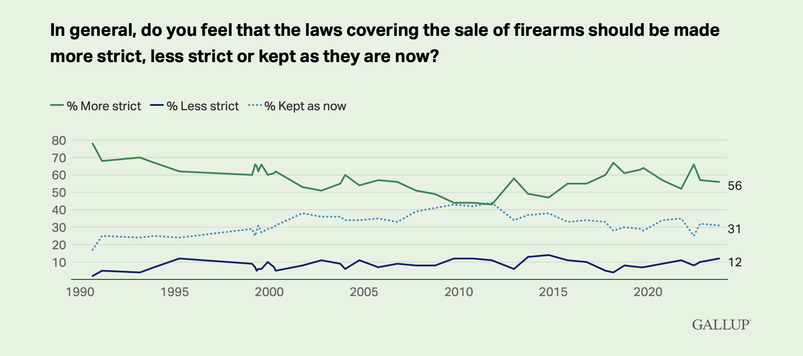
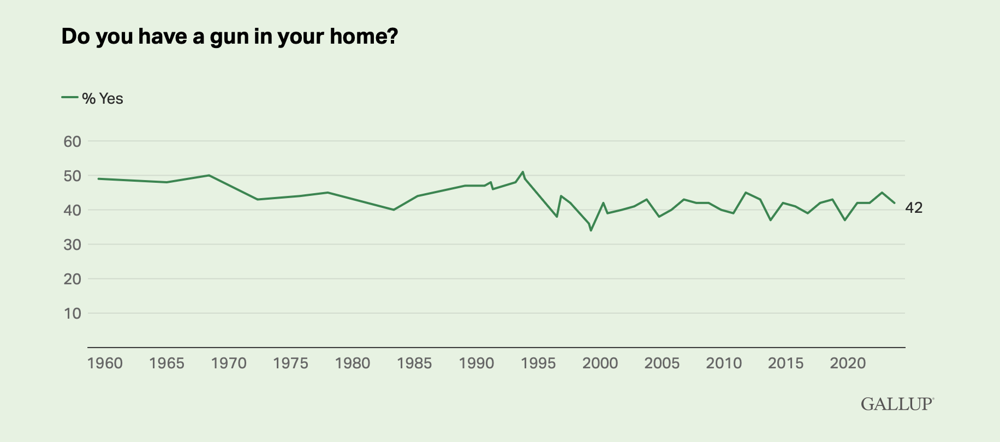

In the aftermath of the tragic mass shooting at Perry High School in Iowa on January 4, 2024, social media platforms and news websites have become forums for a collective outpouring of grief, shock, and frustration. Users express a range of emotions, from sorrow for the victims and their families to anger and a renewed call for stricter gun control measures. The event has prompted discussions about the broader societal issues contributing to such violence and has sparked a renewed sense of urgency for addressing the complex challenges surrounding mental health, gun legislation, and public safety. Amidst the sorrow, there is a shared desire for meaningful change and a collective call for unity in the face of this heart-wrenching tragedy. However, the Iowa mass shooting has also triggered divisive reactions on social media and news websites, with a segment of users expressing views that diverge from the prevailing calls for stricter gun control. Some people have attempted to shift the narrative by attributing blame to the LGBTQ community or individuals with mental health issues. These perspectives have sparked heated debates, with many condemning such statements as misguided and prejudiced. Critics argue that scapegoating marginalized groups perpetuates harmful stereotypes and detracts from the crucial discussions needed to address the root causes of gun violence.
 Both Images are taken from Gallup. Visit Gallup Home Page